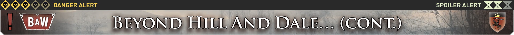
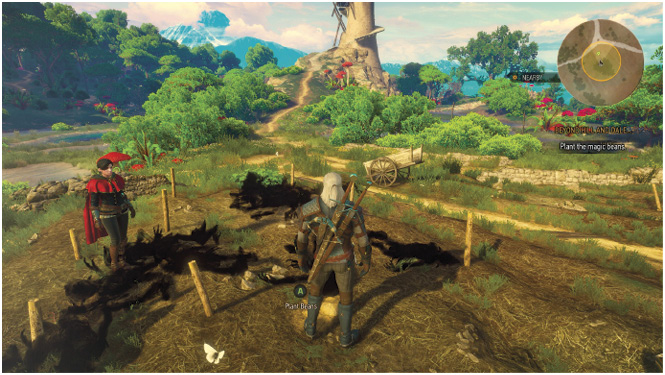
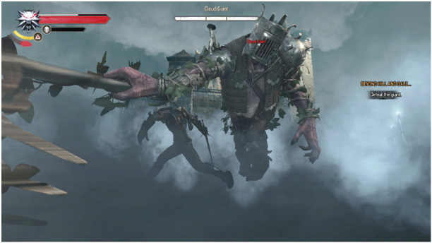
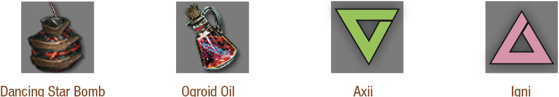

 Once you have all three magic beans (from the Pig, Longlocks, and the Bad Wolf), Syanna suggests planting them by the path near the tower. When you reach the planting field, you’re set upon by a dozen appearing Pixies. Remove these annoyances, then inspect the investigation area (using your Witcher Senses) to find the correct spot.
You place the three beans, before Syanna quickly retreats to cover. A moment later, the ground erupts as a mass of snaking tendrils bursts upward, knocking you off your feet.
 You climb the towering beanstalk with Syanna, ascending into, and then onto the clouds above the Fablesphere. As you look over to Syanna, she tells you there will be time to admire the view later. First though, is the owner of this castle. A lumbering giant crashes out from the entrance, intent on grinding your bones to make his bread.
Defeating the Cloud Giant: His Attacks
The Cloud Giant has the following attacks and maneuvers to be aware of:

Weapon Swing: A medium-range weapon swing. Dodge or leap to the side, or back away to avoid being struck.
Weapon Overhead Smash: A medium-range weapon smash, dropping vertically. Highly damaging, so avoid using dodges and retreating.
Kick, Stomp, and Swipe: The Cloud Giant sometimes kicks, stomps, or swipes with his left arm; both push you back, increasing the distance between you, allowing the giant to be more effective with his weapon swings. Simply avoid these by dodging.
Charge Attack: If you’re at long range, the Cloud Giatn occasionally attempts a charge to close the distance. If you’re caught, expect to be pushed back, and possibly sent tumbling over. Recover and retreat, or simply roll or dodge to the side to avoid it.
Whirlwind Attack: Occurring at both short and long distances, this is the the Cloud Giant’s most severe series of strikes, so watch for him raising his weapon up to the side of the head before his spins around. Damage is significant, and you’re sent flying. Parrying is not an option, but dodging (or letting Quen bear the brunt of this) is.
Cloud Teleport: Using his lair to the best of his advantage, he drops into a cloud, and a moment later, leaps back out, and brings his mighty weapon slamming down with an overhead smash. React with dodging, while keeping an eye on where he leaps up from so you aren’t caught.
Defeating the Cloud Giant: The Best Battle Tactics
Engage this behemoth in combat amid the clouds. Syanna helps, but it still takes skill and cunning to vanquish this tough son of a wench, which hits pretty hard for an illusion. Use the techniques you attempted when you slew the other giant while first adventuring in Toussaint , or employ similar techniques to those when facing a Cyclops, or the Ice Giant in Undvik.
In addition, to shorten combat considerably, you stay within the three piles of metal objects. As this battle takes place on a cloud, during a thunderstorm, these objects are frequently struck by lightning. The objects remain electrified afterwards, so lure the Cloud Giant close to one of the metal piles still writhing with energy, and wait for the foe to make a giant swing, and a giant mistake! The giant’s weapon strikes the metal, electrocuting the fool and allowing you to attack him for a few moments. Keep this up!
The Cloud Giant’s Vulnerabilities

The Witcher® is a trademark of CD PROJEKT S. A. The Witcher game © CD PROJEKT S. A. All rights reserved. The Witcher game is based on a novel by Andrzej Sapkowski. All other copyrights and trademarks are the property of their respective owners. Learn more at thewitcher.com.
{kind=link}
{kind=link}